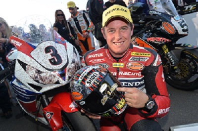

John McGuinness TT Legend:
John McGuinness was born on the 16th April 1972. He was born on Granville Road in Morecambe, UK. John McGuinness later became known as the "Morecambe Missile". His father taught him how to ride a motorbike (with stabilisers on it) at the age of 3 years old. John's hero was Joey Dunlop. His first encounter with Dunlop was at the age of 14 when he got his autograph. He told Dunlop that he would stand on the TT podium with him one day. Eleven years later in 1997 he did just that - stood on the TT podium with Dunlop. Within ten years the pair were team-mates in the Vimto Honda squad as they progressed towards the two greatest TT racers of all time.
John took part in his first ever TT race, the 1996 Lightweight 250cc event. Riding Paul Bird's RS 250cc Honda. John finished 15th, did 111.49mph, and was the best newcomer in the class.
In 1999 John won his first TT race and had the lap record - the Lightweight 250cc race on his 250cc TSr Honda.
In 2000 John's dream came though when he became Dunlop's team-mate. He became Dunlop's protégé. Dunlop won the race that year with John in third place, both racing for Honda. It was his first 1000cc four-stroke ride and first big bike podium.
The 2006 TT Races proved to be the best ever for McGuinness. He won three races - Senior, Superbike and Supersport - and he lowered the outright lap record four times during the festival. He won the 600cc race and set a new lap record at 123.97mph.
The 2007 TT races was also a great year with McGuinness taking wins in the Superbike TT and the Senior TT with lap and race records in both, the Senior lap record at 130.35mph not only the outright lap record but the first to break the 130 mph barrier.
In 2010 John's spell was broken. He failed to score a podium finish for the first time since 1997. He finished seventh and fifth in the two Supersport races and fourth in the Superstock race. In the Senior race his bike failed due to a wiring issue with his kill switch, causing the bike to cut out.
In 2011 John went back to Honda with a new name change "TT Legends" and he achieved his fastest lap in a 600cc - 126.22mph - winning the six lap Superbike TT race.
In 2012 with the Senior TT called off for the first time in 105 years, John lost the opportunity to race for his traditional Superbike double. But he still scored a brace of wins by taking the one race that had always evaded him - The Superstock TT. Moving closer to twenty victories also brought inevitable speculation about whether he could become the most successful TT racer of all time.
In 2013, John was chosen by Honda to lead a special celebration of his old team-mate and rival Joey Dunlop's first TT win for the Japanese company. He also had to deal with the challenge if a new Dunlop - Joey's nephew, Michael, who had joined TT Legends squad the previous year. The pressures contributed to some uncharacteristic errors before the Morecambe Missile salvaged a spectacular win at the end of the race week.
In 2014, John sustained injuries. He broke his scaphoid bone and dislocated the lunate bone in the wrist of his throttle hand. He had surgery on his wrist. He went on to win the Zero TT race with an enormous lap record, 117.36mph
In May 2017, John suffered serious injuries during practice for the Superbike race at the North West 2000 event. He sustained broken vertebrae, ribs and compound fractures to his right leg while racing a Honda Firebird under early development. Honda confirmed that the accident was caused by an electronics fault in the special race-kit when the engine unexpectedly accelerated.
This year John is competing again in the TT races but not under Honda but with Norton.